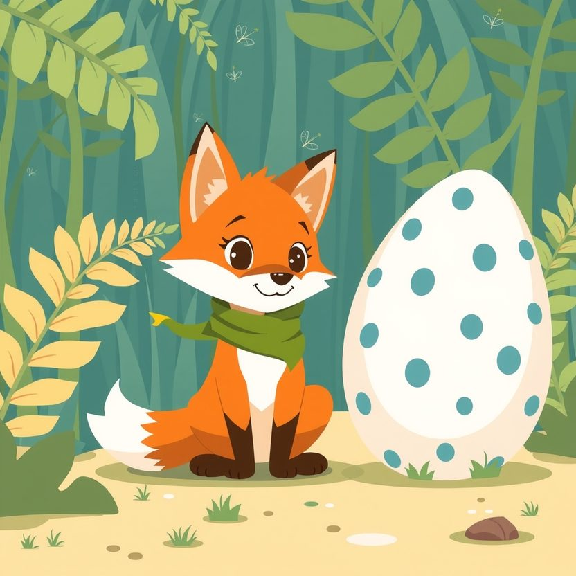

Titistoire › Les Étoiles (3-6 ans)
Filou et l'œuf tacheté
Une histoire de Filou le renard pour parler de : rendre et laisser partir.

▶ Écouter et regarder l'histoire
Gratuit, sans inscription : la voix lit, le texte suit mot à mot, les images tournent comme dans un album.
Le texte de l'histoire
Dans la vallée des Fougères, là où vivent les dinosaures, Filou trottine, la truffe au ras du sol. Il flaire, il furète : il cherche quelque chose d'extraordinaire. Comme tous les matins.
Et ce matin-là, entre deux fougères géantes, il le trouve. Un œuf. Énorme. Tout tacheté de bleu. Même sur la pointe des pattes, Filou est plus petit que lui !
« Ça alors ! Le plus bel œuf du monde ! jubile Filou, la joue sur la coquille. C'est moi qui l'ai trouvé, donc… il est à moi. »
Filou pousse l'œuf, han ! Il le roule, hop ! Arc-bouté, il lui fait grimper le talus jusqu'à sa cachette. C'est lourd, un trésor.
Son ami Tric, le petit tricératops, renifle la coquille et penche la tête. « Il est à qui, cet œuf ? » « À moi ! réplique Filou, le nez en l'air. Je l'ai trouvé. » « Oui mais… avant que tu le trouves ? »
Filou fait la sourde oreille. Vite, il emmitoufle l'œuf dans de grandes feuilles, bien au chaud, puis s'assoit devant, droit comme un gardien.
Soudain… toc. Toc toc. Crrrac ! Une fissure court sur la coquille. Puis deux. Et voilà que surgit une petite tête bleue, avec deux grands yeux tout brillants.
Le bébé regarde Filou. Filou regarde le bébé. « Mmmma ? » gazouille le petit. « Ah non non non ! proteste Filou en agitant les pattes. Moi, c'est Filou. »
« Mmma ! » répète le bébé, ravi. Et il se blottit contre Filou de tout son poids, comme un gros coussin tiède.
Un bébé dinosaure, ça a faim. Tout le temps. Filou court cueillir une brassée de feuilles. Encore des feuilles. Et encore des feuilles ! Il en a les pattes en compote.
Un bébé dinosaure, ça vous suit partout. Dans la rivière, plouf ! Dans les ronces, aïe ! Et jusque sur le dos de Filou, ouf !
Mais quand le petit s'assoupit, le museau dans le cou de Filou, avec des ronflements minuscules… Filou songe qu'il n'a jamais rien eu d'aussi précieux.
Cette nuit-là, un chant s'élève dans la vallée. Un chant long, grave, et si triste que même les étoiles ont l'air de l'écouter. « Mooooou… Mooooou… »
Le bébé dresse la tête, le cou tendu. Ses yeux brillent. « Mmma ? » Mais cette fois, ce n'est pas Filou qu'il regarde. C'est là-bas, tout au loin.
Filou sait très bien qui chante ainsi. C'est une maman qui cherche. Il ferme les yeux, il se bouche les oreilles à deux pattes, de toutes ses forces. Ça ne marche pas.
« Si je le ramène, je n'aurai plus rien, murmure Filou. Plus de trésor. Plus de coussin tiède. » Tric ne répond pas. Il vient seulement s'asseoir tout contre lui.
Le chant reprend, porté par le vent. « Mooooou… » Et Filou pense à sa maman à lui. À ce qu'elle ferait, si un soir il n'était plus dans son terrier.
Alors il se lève. Il a une grosse boule dans la gorge, mais il se lève. « Allez, viens, mon gros. On rentre chez toi. »
Ils cheminent toute la nuit, cahin-caha. Au lever du soleil, une ombre immense recouvre Filou : un cou long comme un arbre, et tout en haut, deux yeux pleins de larmes.
« Mmma ! » s'écrie le bébé, et il court, il trébuche, il court encore. La maman le renifle, le lèche, le serre contre elle. Toute la vallée en tremble de joie.
Puis la grande tête descend, descend, jusqu'à Filou. Et la maman lui souffle sur le museau, tout doucement, à lui ébouriffer les poils. Chez les dinosaures, ça veut dire merci.
Filou repart les pattes vides. Pas d'œuf. Pas de trésor. Et pourtant, il gambade sur le sentier, tout léger, comme s'il lui avait poussé des ailes.
Depuis, chaque matin, un petit dinosaure bleu l'attend au bord de la rivière. Petit ? Plus tant que ça : il a déjà drôlement grandi ! Mais il dit toujours « Mmma ! », et Filou ne le corrige plus.
Et certains jours, quand la maman veut bien, Filou se hisse tout en haut de son long cou. De là-haut, la vallée entière s'étale sous ses pattes. C'est quelque chose d'extraordinaire.